This article demonstrates how to use fit_mdm() and
benchmark() to build, tune and evaluate classification
models on deconvoluted NMR spectra. We use the simulated
sim2 dataset shipped with the package, split it into
training and test sets, run a small grid search to find good
preprocessing parameters, and then evaluate on held-out data.
Load spectra
sim2 contains 100 simulated 1D NMR spectra split evenly
into groups A and B. Five out of 25 peaks per
spectrum differ between groups by 10% in area. The group labels are
attached as an attribute. For details on how the dataset was
constructed, see ?sim2.
library(metabodeconplus)
x <- sim2
y <- attr(sim2, "group")
n <- length(x)The following figure shows four spectra from each group overlaid on top of each other. The subtle area differences are hard to spot visually.
a4 <- which(y == "A")[1:4]
b4 <- which(y == "B")[1:4]
ab <- c(a4, b4)
plot_spectra(x[ab])
heat_spectra(x[ab])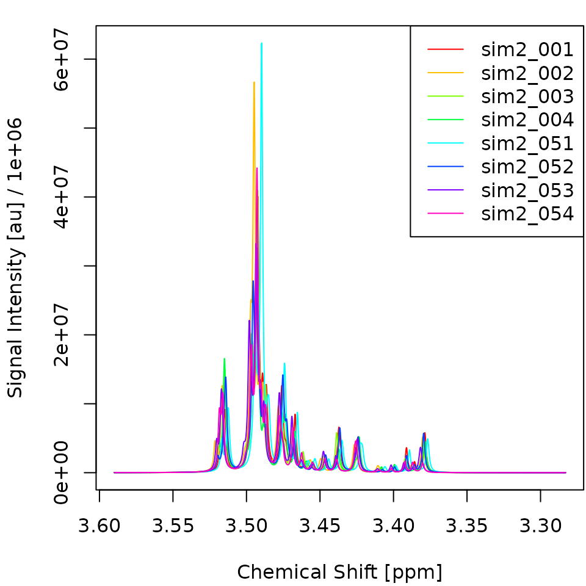
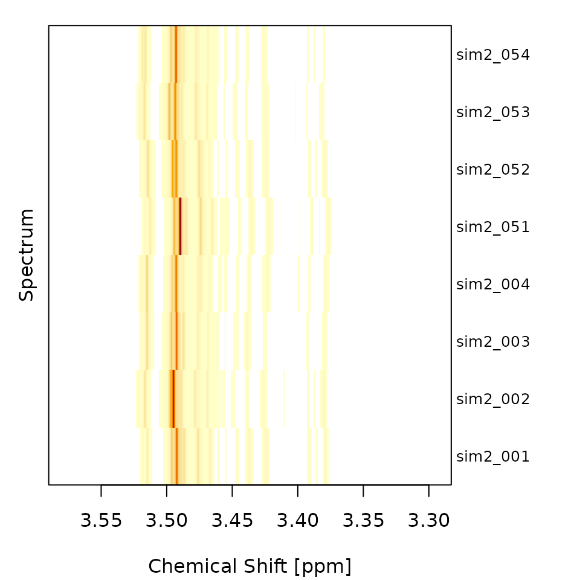
Fit a model manually, step by step
To go from raw spectra to a fitted classifier we need three preprocessing stages plus the model fit itself:
- Deconvolution – represent each spectrum as a list of Lorentzian peaks.
- Alignment – shift peaks so corresponding peaks across spectra share the same chemical-shift index. One spectrum is picked as the reference and all others are aligned to it.
-
Feature matrix construction – collapse the aligned
peak lists into one row per spectrum, optionally merging peaks within
maxCombineindices. -
Model fit – here, an L1-penalized logistic
regression via
cv.glmnet().
fit_mdm() performs all four steps for every row of a
parameter grid and returns the best model. Below we do them by hand for
one parameter set so we can inspect each intermediate state.
We pick a small group-balanced subset (4+4 spectra) just for
plotting; the model itself is trained on all of x[tr].
a4tr <- which(y[tr] == "A")[1:4]
b4tr <- which(y[tr] == "B")[1:4]
abtr <- c(a4tr, b4tr)
yab <- y[tr][abtr]
true_x0 <- attr(sim2, "true_x0") # post-alignment ppm of discriminating peaksStep 1: Deconvolute
decons <- deconvolute(x[tr], nfit=10, smit=2, smws=5, delta=10, npmax=0, verbose=FALSE)
plot_spectra(decons[abtr])
heat_spectra(decons[abtr], y=yab)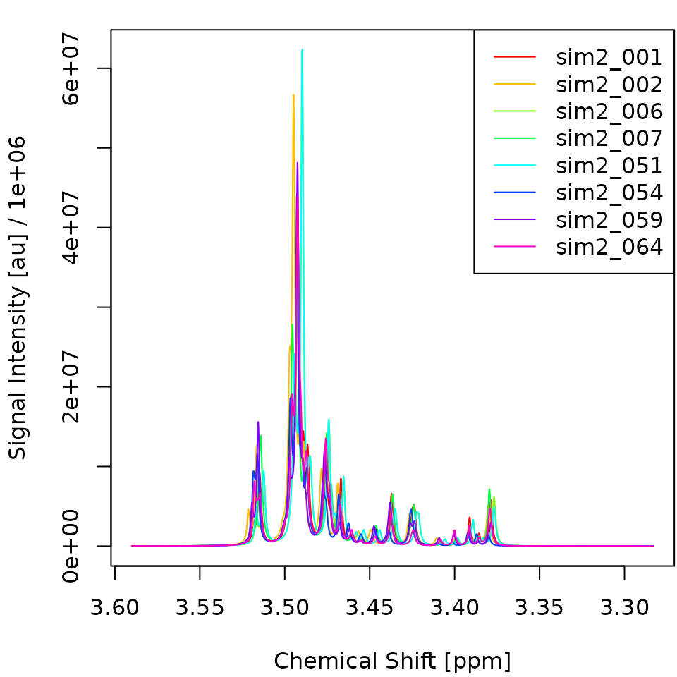
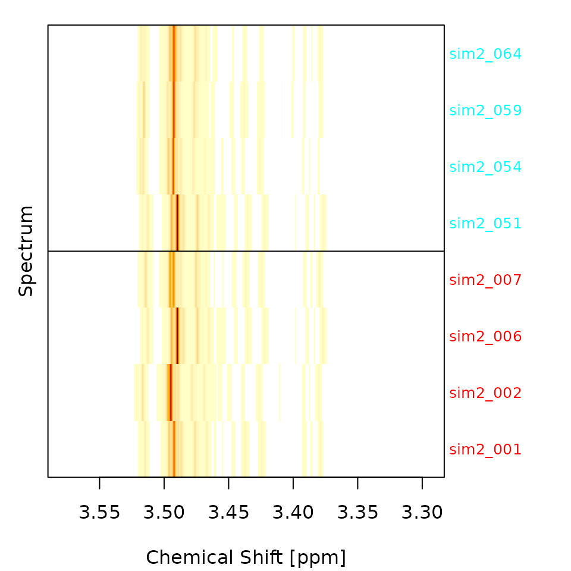
Step 2: Align
clupa() calls an internal find_ref() to
pick the spectrum whose peaks are closest to all others. We extract that
reference now – we need it later to align the test spectra to
the same coordinate system.
aligns <- clupa(decons, maxShift=50, verbose=FALSE)
ref <- metabodeconplus:::find_ref(decons)
plot_spectra(aligns[abtr])
heat_spectra(aligns[abtr], y=yab)
Step 3: Build the feature matrix
si_mat() turns each aligned peak list into a row of a
peak-area matrix. Columns are aligned chemical-shift indices, optionally
merged within maxCombine indices of each other.
peakPos records which columns are actually populated –
these are the features the model will see.
mat <- si_mat(aligns, maxCombine=10)
peakPos <- which(colSums(mat != 0) > 0)
X <- mat[, peakPos, drop=FALSE]
dim(X)## [1] 50 148
heat_spectra(X, y=y[tr], true_x0=true_x0)
heat_spectra(X, y=y[tr], true_x0=true_x0, scale_cols=TRUE)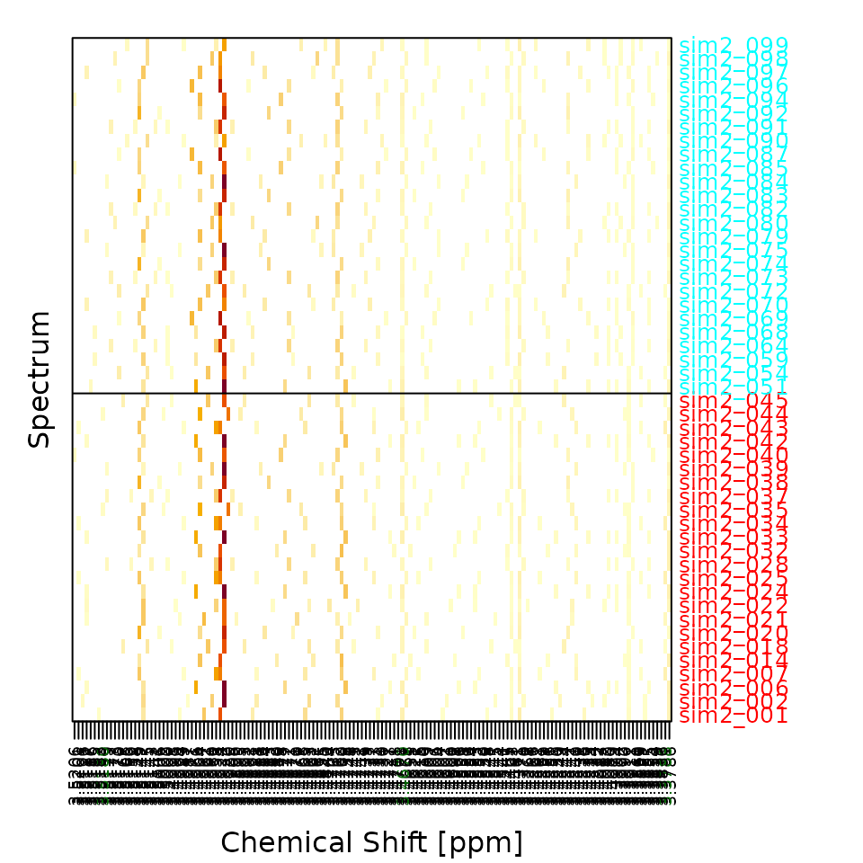
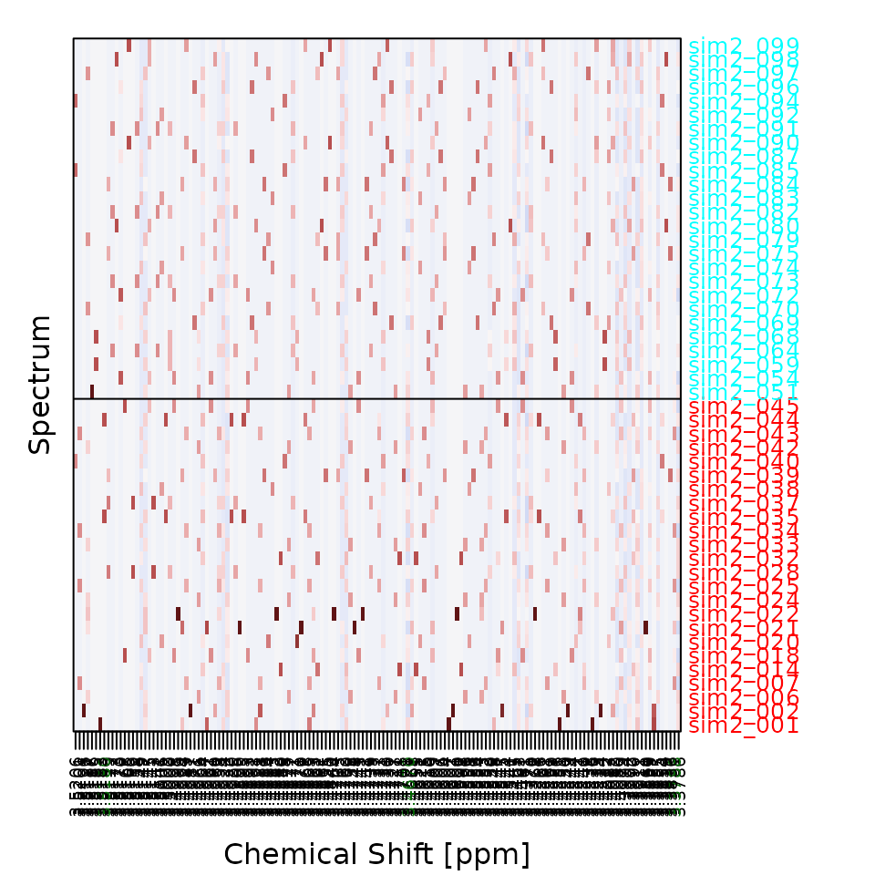
The standardized view (scale_cols=TRUE) makes the group
structure of the discriminating peaks more visible: columns near
true_x0 show consistent sign differences between A (top)
and B (bottom).
Step 4: Fit the lasso
foldid <- metabodeconplus:::get_foldid(y=y[tr], nfolds=5, seed=1)
cvfit <- glmnet::cv.glmnet(X, y[tr], family="binomial", alpha=1, foldid=foldid, keep=TRUE)
plot(cvfit)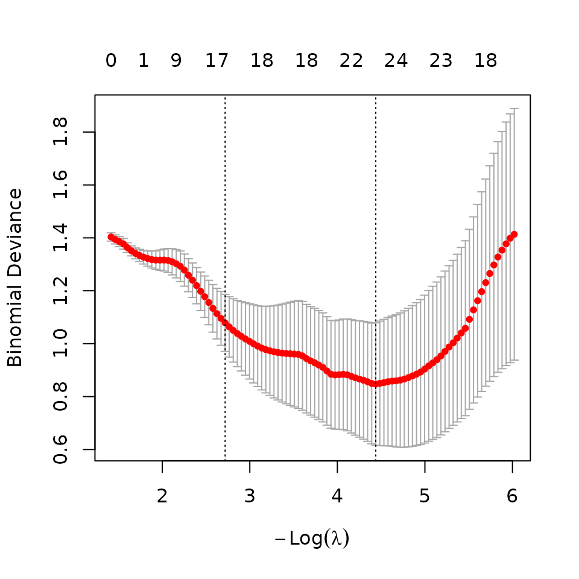
The non-zero coefficients at lambda.min are the
chemical-shift columns the model relies on. Let us highlight them in the
feature heatmap:
cf <- as.matrix(coef(cvfit, s="lambda.min"))
picked <- rownames(cf)[cf[, 1] != 0]
picked <- setdiff(picked, "(Intercept)")
picked_idx <- match(picked, colnames(X))
heat_spectra(X[, picked_idx, drop=FALSE], y=y[tr], true_x0=true_x0)
heat_spectra(X[, picked_idx, drop=FALSE], y=y[tr], true_x0=true_x0,
scale_cols=TRUE)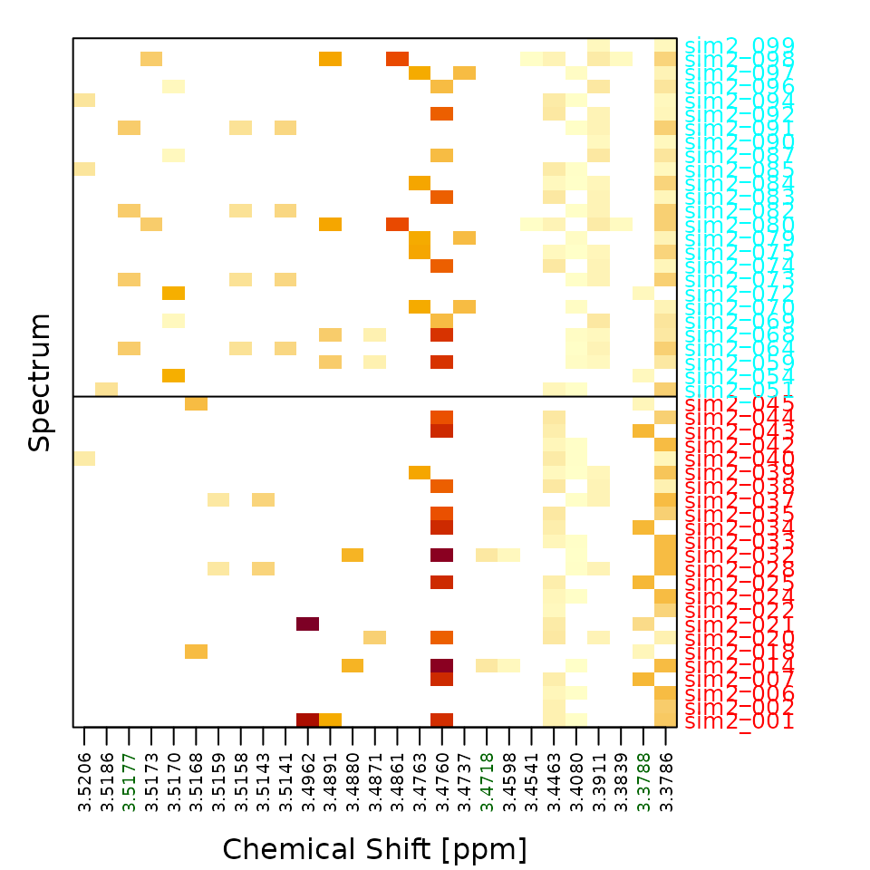
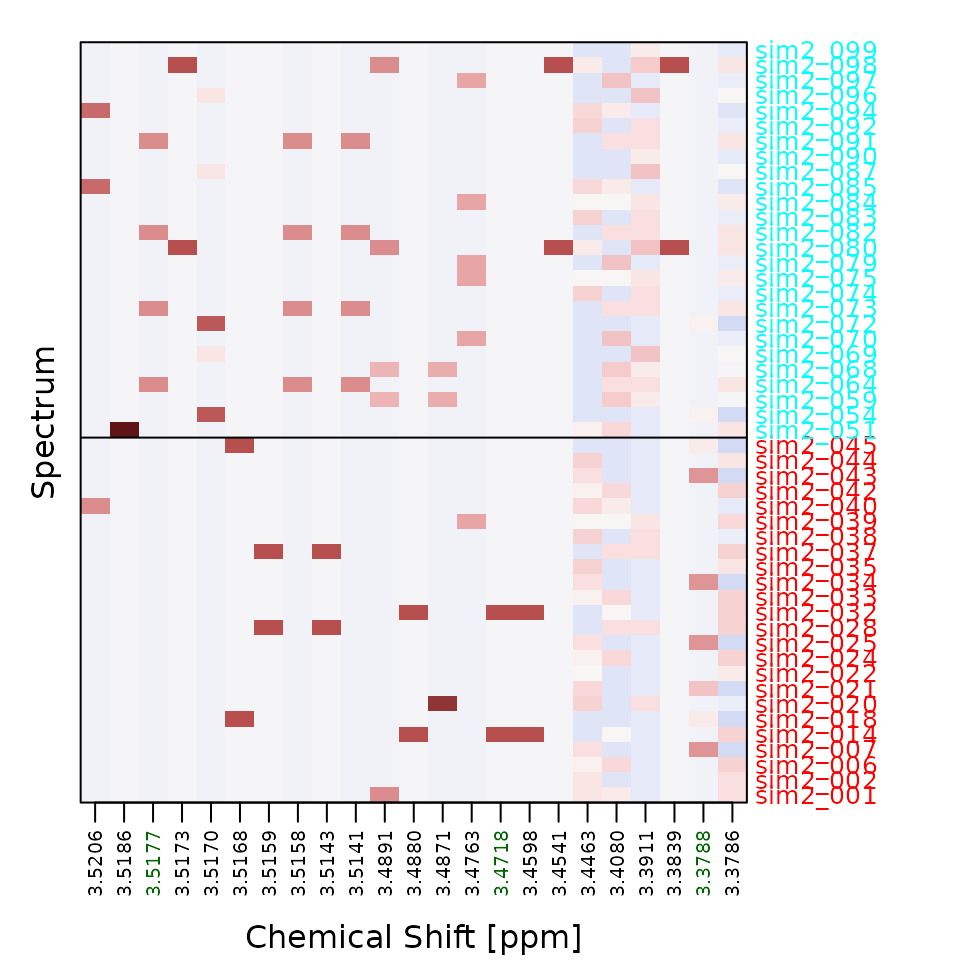
Equivalent one-shot call
The exact same model can be fit with one fit_mdm()
call:
md <- fit_mdm(x[tr], y[tr], npmax=0L, maxShift=50L, maxCombine=5L,
verbosity=0, nworkers=1)
print(md)## metabodeconplus model (mdm)
## model: cv.glmnet
## npmax: 0
## maxShift: 50
## maxCombine: 5
## acc: 92.0(±1.7)%
## auc: 92.1(±2.1)%Predict held-out spectra manually
predict.mdm() mirrors the four training steps for new
data, but reuses the training-time reference and peakPos so
the test feature matrix has the same columns as the
training one.
Step 1: Deconvolute the test spectra
decons_te <- deconvolute(x[te], nfit=10, smit=2, smws=5, delta=10,
npmax=0, verbose=FALSE)Step 2: Align to the training reference
aligns_te <- clupa(decons_te, maxShift=50, ref=ref, verbose=FALSE)Step 3: Build feature matrix using training
peakPos
We build the full test matrix on the shared chemical-shift grid and
then restrict it to the training-time peakPos columns so
Xte has the same columns as X.
mat_te <- si_mat(aligns_te, maxCombine=10)
Xte <- mat_te[, peakPos, drop=FALSE]
stopifnot(identical(colnames(Xte), colnames(X)))
heat_spectra(Xte, y=y[te], true_x0=true_x0, scale_cols=TRUE)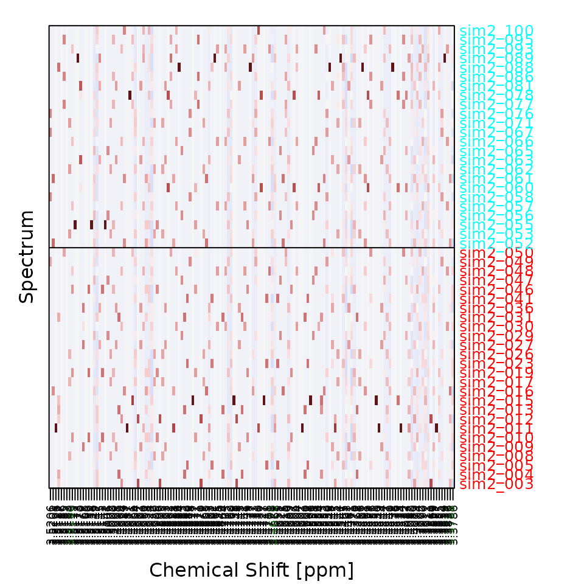
Step 4: Apply the trained model
prob_te <- as.numeric(predict(cvfit, newx=Xte, s="lambda.min", type="response"))
pred_te <- factor(ifelse(prob_te > 0.5, levels(y)[2], levels(y)[1]),
levels=levels(y))
acc_manual <- mean(pred_te == y[te])
auc_manual <- metabodeconplus:::AUC(y[te], prob_te)
cat(sprintf("Manual test acc: %.1f%%, AUC: %.3f\n", acc_manual * 100, auc_manual))## Manual test acc: 82.0%, AUC: 0.851Compare with a random forest
The feature matrix contains many zeros, which represent peaks that
were not detected in a given spectrum – semantically closer to “missing”
than to “low intensity”. Tree-based models handle this naturally: a
single split at x>0 separates absent from present, and
further splits on the present subset capture intensity differences.
Random forests also have built-in regularization via tree depth and
ensembling, so they need almost no tuning.
We fit a ranger random forest on the same
X/Xte matrices used above:
rf <- ranger::ranger(x=X, y=y[tr], probability=TRUE, num.trees=500, seed=1)
prob_rf <- predict(rf, data=Xte)$predictions[, levels(y)[2]]
pred_rf <- factor(ifelse(prob_rf > 0.5, levels(y)[2], levels(y)[1]), levels=levels(y))
acc_rf <- mean(pred_rf == y[te])
auc_rf <- metabodeconplus:::AUC(y[te], prob_rf)
cat(sprintf("RF test acc: %.1f%%, AUC: %.3f\n", acc_rf * 100, auc_rf))## RF test acc: 84.0%, AUC: 0.800The equivalent one-shot call uses fit_mdm() with
model="ranger" to score grid rows on the random forest’s
OOB AUC:
md_rf <- fit_mdm(x[tr], y[tr], model="ranger", npmax=0L, maxShift=50L,
maxCombine=5L, verbosity=0, nworkers=1)
preds_rf <- predict(md_rf, x[te], type="all", verbosity=0)
acc_rf2 <- mean(preds_rf$class == y[te])
auc_rf2 <- metabodeconplus:::AUC(y[te], preds_rf$prob)
cat(sprintf("RF (fit_mdm) test acc: %.1f%%, AUC: %.3f\n", acc_rf2*100, auc_rf2))## RF (fit_mdm) test acc: 84.0%, AUC: 0.825The individual pipeline stages remain fully pluggable through the
internal engine metabodeconplus:::fit_mdm_internal(), which
accepts decon_fun / align_fun /
snap_fun / feat_fun / fit_fun /
predict_fun arguments for experimentation.
Tune preprocessing via grid search
Passing a vector for any of npmax,
maxShift, or maxCombine makes
fit_mdm() evaluate the cartesian product. For each row it
builds the feature matrix, runs cv.glmnet() with a fixed
fold assignment, and records the held-out accuracy and AUC at
lambda.min. The deconvolution is reused across rows sharing
the same npmax, and the alignment is reused across rows
sharing the same (npmax, maxShift).
mt <- fit_mdm(x=x[tr], y=y[tr],
npmax=c(0L, 50L), maxShift=c(20L, 50L), maxCombine=c(5L, 10L),
verbosity=1, nworkers=1)The performance grid shows how each parameter combination scored:
G <- mt$mog
G <- G[order(-G$auc),]
cap <- "AUC per Parameter Combination. Higher is better."
knitr::kable(x=head(G,10), row.names=FALSE, caption=cap)| npmax | maxShift | maxCombine | acc | auc | acc_se | auc_se |
|---|---|---|---|---|---|---|
| 50 | 20 | 10 | 0.936 | 0.9477564 | 0.0097980 | 0.0112477 |
| 50 | 50 | 10 | 0.936 | 0.9477564 | 0.0097980 | 0.0112477 |
| 0 | 20 | 10 | 0.920 | 0.9386218 | 0.0109545 | 0.0088924 |
| 0 | 50 | 10 | 0.920 | 0.9386218 | 0.0109545 | 0.0088924 |
| 50 | 20 | 5 | 0.928 | 0.9282051 | 0.0149666 | 0.0201273 |
| 50 | 50 | 5 | 0.928 | 0.9282051 | 0.0149666 | 0.0201273 |
| 0 | 20 | 5 | 0.920 | 0.9211538 | 0.0167332 | 0.0214612 |
| 0 | 50 | 5 | 0.920 | 0.9211538 | 0.0167332 | 0.0214612 |
Compare deconvolution results
Let us compare the deconvolution of the first training spectrum using the worst and the best parameters found by the grid search:
# Deconvolute first two training spectra with default and tuned parameters
w <- G[nrow(G),]
b <- G[1, ]
dw <- deconvolute(x[tr[1:2]], npmax=w$npmax, verbose=FALSE)
db <- deconvolute(x[tr[1:2]], npmax=b$npmax, verbose=FALSE)
plot_spectrum(db[[1]], main="Best params", foc_frac=0:1, lgd=FALSE)
plot_spectrum(dw[[1]], main="Worst params", foc_frac=0:1)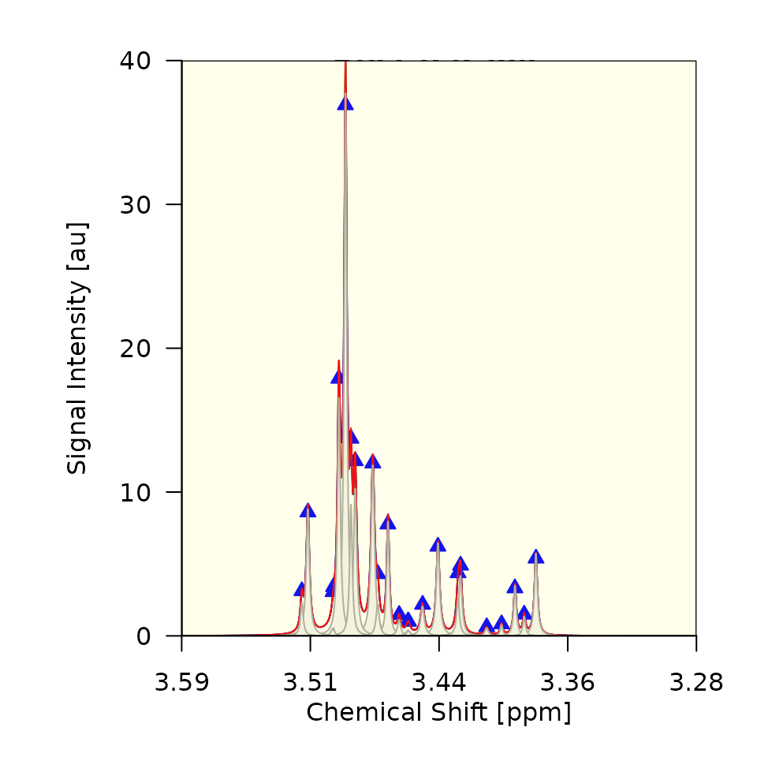
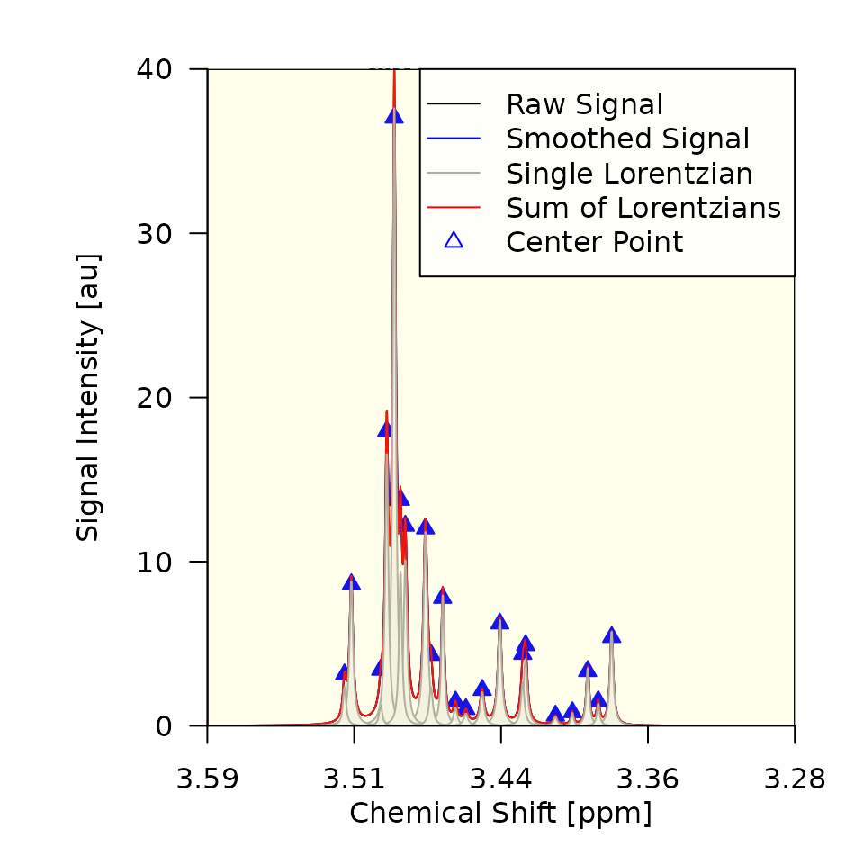
Inspect lasso features
The non-zero coefficients of the lasso model reveal which chemical shift positions are most important for distinguishing the two groups:
cf <- coef(mt)
nz <- cf[cf[, 1] != 0, , drop=FALSE]
knitr::kable(
data.frame(feature=rownames(nz), coefficient=round(nz[, 1], 4)),
row.names=FALSE,
caption="Non-zero lasso coefficients at lambda.min."
)| feature | coefficient |
|---|---|
| (Intercept) | -50.7889 |
| 3.518 | 0.0008 |
| 3.49985 | 0.0000 |
| 3.49235 | 0.0004 |
| 3.4673 | -0.0001 |
| 3.46055 | -0.0008 |
| 3.42515 | 0.0049 |
| 3.4001 | 0.0185 |
| 3.37925 | -0.0071 |
Predict test samples
We use predict.mdm() to classify the held-out test
spectra. This internally deconvolutes and aligns them against the
reference spectrum stored in the model:
preds <- predict(mt, x[te], type="all", verbosity=0)
results <- data.frame(
sample=get_names(x[te]),
true=y[te],
predicted=preds$class,
prob_B=round(preds$prob, 3)
)
cap <- "Confusion matrix on test set."
acc <- mean(preds$class == y[te])
auc <- metabodeconplus:::AUC(y[te], preds$prob)
knitr::kable(table(True=y[te], Pred=preds$class), caption=cap)| A | B | |
|---|---|---|
| A | 25 | 1 |
| B | 6 | 18 |
##
## Test Acc: 86.0%## Test AUC: 81.7%## nA/nA+nB: 52.0%Benchmark with nested cross-validation
If you do not have enough samples for a train/test split, you can use
benchmark() instead. It wraps fit_mdm() in an
outer cross-validation loop so that every sample is used for both
training and evaluation. The outer held-out fold is never seen during
preprocessing or model fitting, so the resulting accuracy and AUC are
honest estimates.
A typical call looks like this:
bm <- benchmark(x, y, npmax=0L, maxShift=50L, maxCombine=5L)
acc <- mean(bm$predictions$true == bm$predictions$pred) * 100
cat(sprintf("Nested CV accuracy: %.1f%%\n", acc))Note that benchmark() is computationally expensive
because it runs the full grid search for each outer fold. It is
therefore not executed in this vignette.